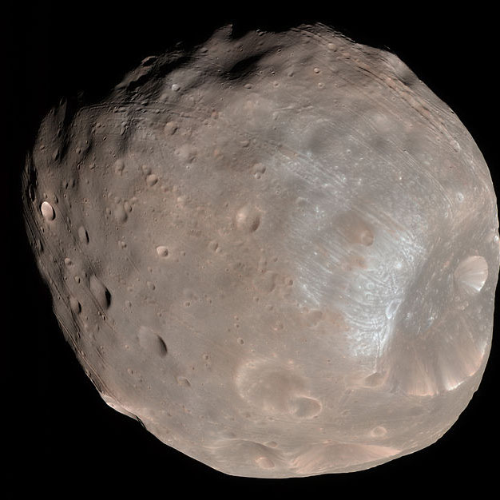
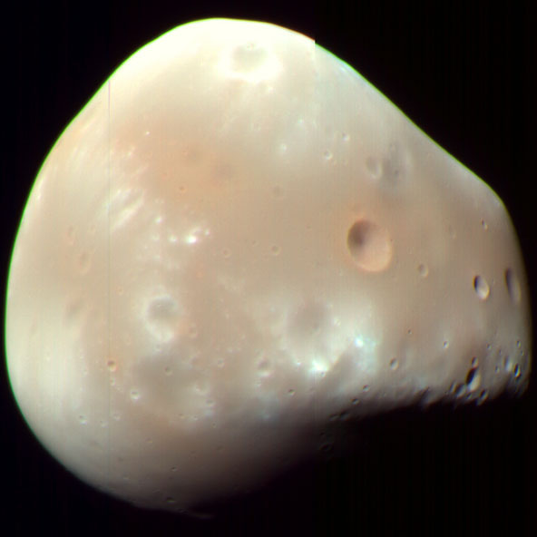

Moons

If viewed from the surface of Mars near its equator, full Phobos looks about one third as big as the Earth's full moon from Earth.
Phobos

Deimos looks more like a bright star or planet for an observer on Mars, only slightly bigger than Venus looks from Earth; it has an angular diameter of about 2'.